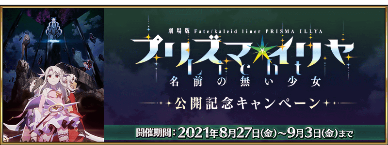
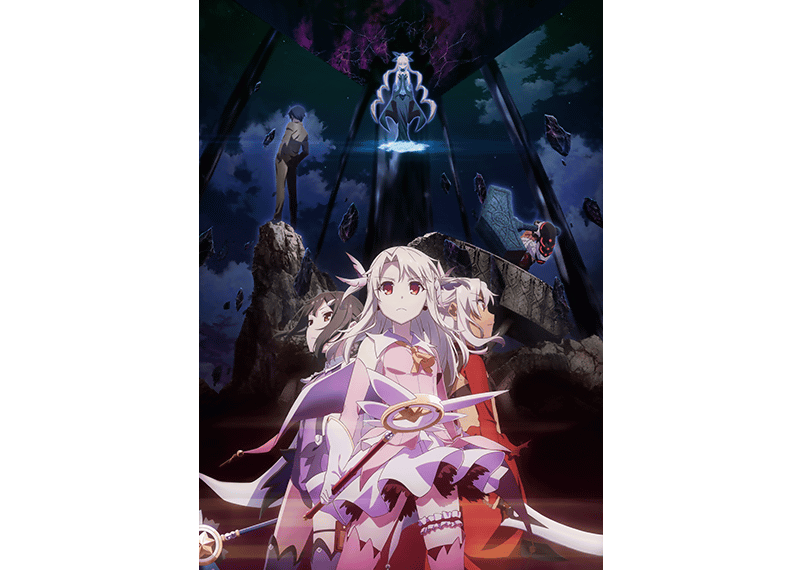
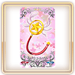
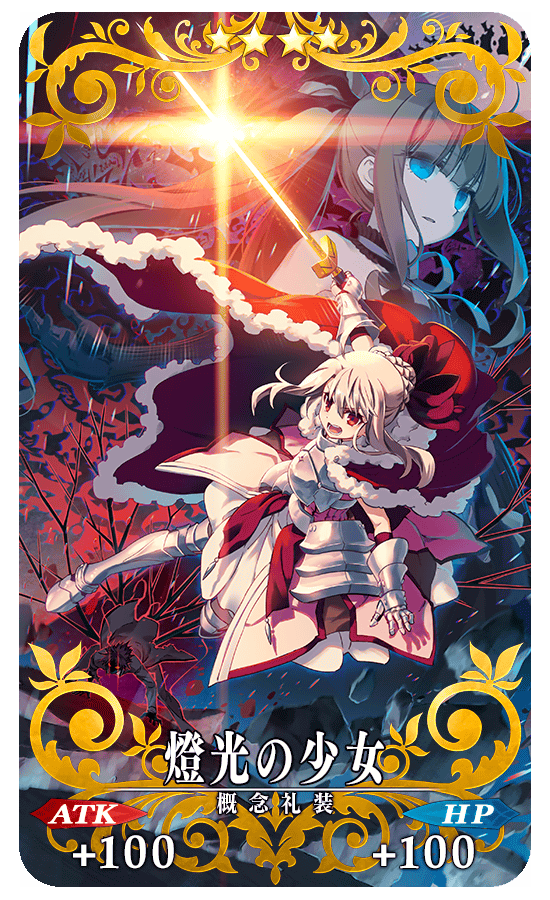
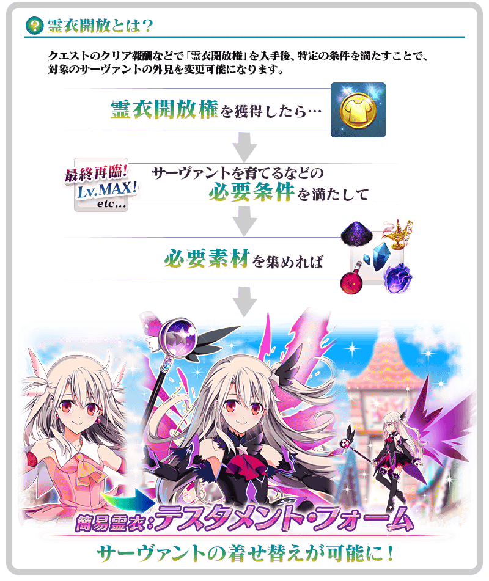

配合在2021年8月27日(五)開始上映的「劇場版 Fate/kaleid liner 魔法少女☆伊莉雅 Licht 無名少女」，舉辦『「劇場版 Fate/kaleid liner 魔法少女☆伊莉雅 Licht 無名少女」上映記念宣傳活動』！
※本頁面皆為開發中圖片。會有與實際圖片相異的情況。
◆舉辦期間◆
2021年8月27日(五) 17:00～9月3日(五) 11:59
「劇場版 Fate/kaleid liner 魔法少女☆伊莉雅 Licht 無名少女」概要
【標題】
劇場版 Fate/kaleid liner 魔法少女☆伊莉雅 Licht 無名少女
【上映日】
2021年8月27日(五)
【上映影廳等詳細在官方網站】
http://anime.prisma-illya.jp/movie/3/

Ⓒ2021 ひろやまひろし・TYPE-MOON／KADOKAWA／劇場版「Fate/kaleid liner 魔法少女☆伊莉雅 Licht 名前の無い少女」製作委員会
為了記念「劇場版 Fate/kaleid liner 魔法少女☆伊莉雅 Licht 無名少女」的上映，實施上映記念連續登入獎勵！
在下述期間中5天內連續登入的話，贈送5,000,000QP、睿智的猛火ALL★4(SR)5張、★3(R)概念禮裝EXP卡「マジカルルビー」5張、黃金果實1個、呼符1張！
◆舉辦期間◆
2021年8月27日(五) 17:00～9月4日(六) 2:59
◆贈送對象◆
2021年9月3日(五) 2:59前通過「特異點F 炎上汙染都市 冬木」的御主對象
※上述時間前，在管理室(ターミナル)畫面的關卡橫幅必須要有「CLEAR」的文字顯示
| 連續登入天數 | 贈送內容 | |
|---|---|---|
| 第1天 |

|
5,000,000QP |
| 第2天 |

|
睿智的猛火ALL★4(SR) 5張 |
| 第3天 |  | ★3(R)概念禮裝EXP卡「マジカルルビー」 5張 |
| 第4天 |

|
黃金果實 1個 |
| 第5天 |

|
呼符 1張 |
※第1次的登入獎勵會在8月27日(五) 17:00以後配發。 ※之後的登入獎勵會在每天3:00配發。 ※連續登入天數中斷後，無法領取之後的禮物。 ※最多能領取5次，但根據成為贈送對象的時間點，可能無法到此上限。
下述的期間中，在進行強化「劇場版 Fate/kaleid liner 魔法少女☆伊莉雅 Licht 無名少女」關聯從者時，大成功(經驗值2倍加成)・極大成功(經驗值3倍加成)的發生率以期間限定變成2倍！
務必藉此機會強化關聯從者吧！
◆舉辦期間◆
2021年8月27日(五) 17:00～9月3日(五) 11:59
◆對象從者◆
| 職階 | 稀有度 | 從者名 |
|---|---|---|
| Archer | ★★★★ | 伊莉雅絲菲爾・馮・愛因茲貝倫 |
| ★★★★ | 克洛伊・馮・愛因茲貝倫 | |
| Caster | ★★★★★ | 伊莉雅絲菲爾・馮・愛因茲貝倫 |
| ★★★★ | 美遊・艾蒂菲爾特 |
通過下述的期間中在迦勒底之門出現的『「劇場版 Fate/kaleid liner 魔法少女☆伊莉雅 Licht 無名少女」上映記念關卡』，得到關卡限定的概念禮裝吧！
※請注意在『「劇場版 Fate/kaleid liner 魔法少女☆伊莉雅 Licht 無名少女」上映記念關卡』沒有文字冒險部份。
◆舉辦期間◆
2021年8月27日(五) 17:00～9月3日(五) 11:59
◆關卡開放條件◆
所有的御主對象
※新御主玩家必須推進至通過「特異點F 炎上汙染都市 冬木 第3節 進行度1」。
◆『「劇場版 Fate/kaleid liner 魔法少女☆伊莉雅 Licht 無名少女」上映記念關卡』限定概念禮裝◆
|  |
★★★★SR |
在2017年舉辦的『「劇場版Fate/kaleid liner 魔法少女☆伊莉雅 雪下的誓言」上映記念宣傳活動』中登場過，下述的新道具在達文西工房的「稀有稜鏡交換」追加。
◆追加時間◆
2021年8月27日(五) 17:00～
◆交換條件◆
所有的御主對象
※新御主玩家必須推進至通過「特異點F 炎上汙染都市 冬木 第3節 進行度1」。
◆追加道具(永久)◆
魔法少女☆伊莉雅劇場上映記念關卡
| 追加道具 | 能交換次數 | 1次交換所需的 稀有稜鏡數 |
|---|---|---|
| 魔法少女☆伊莉雅劇場上映記念關卡 | 1次 | 3個 |
※在「稀有稜鏡交換」追加的「魔法少女☆伊莉雅劇場上映記念關卡」開放權為永久，沒有交換期限。 ※關於已經通過交換對象關卡的玩家，剩餘次數會顯示為「0次」，無法交換。 ※在通過關卡入手的限定概念禮裝會是最高等級。 ※請注意在「魔法少女☆伊莉雅劇場上映記念關卡」沒有文字冒險部份。
在2019年舉辦的聯動活動「復刻版:魔法少女紀行 ～Prisma・Codes～ -Re-install-」登場，「★5(SSR)伊莉雅絲菲爾・馮・愛因茲貝倫(Caster)」的簡易靈衣「テスタメント・フォーム」開放權在達文西工房的「靈衣縫製」追加！
用稀有稜鏡2個交換後，可入手上述靈衣開放權。
想靈衣開放的話，除了靈衣開放權外再加上必須滿足一些開放條件。
◆追加時間◆
2021年8月27日(五) 17:00～
◆交換條件◆
滿足以下條件的御主才能交換
・通過「特異點F 炎上汙染都市 冬木」
・未入手簡易靈衣「テスタメント・フォーム」開放權
※在「靈衣縫製」追加的簡易靈衣「テスタメント・フォーム」開放權為永久，沒有交換期限。 ※關於已經取得交換對象靈衣開放權的玩家，無法交換。
◆有關靈衣開放權的注意◆ ※本次追加的「★5(SSR)伊莉雅絲菲爾・馮・愛因茲貝倫(Caster)」的靈衣是只有外觀的變化，語音沒變化的「簡易靈衣」。 ※請注意未持有「★5(SSR)伊莉雅絲菲爾・馮・愛因茲貝倫」的情況，可入手靈衣開放權，但無法進行靈衣開放。
◆追加道具(永久)◆
| 追加道具 | 能交換次數 | 1次交換所需的 稀有稜鏡數 |
|---|---|---|
| 簡易靈衣「テスタメント・フォーム」開放權 | 1次 | 2個 |


「靈衣開放」是自強化畫面進行。
※「靈衣開放」後自動切換戰鬥角色和圖示。若想回到「靈衣開放」前的狀態和變成其他再臨階段的情況，可自從者詳細畫面變更。 ※就算「靈衣開放」也不會讓職階和能力等有所變化。
介紹開放簡易靈衣「テスタメント・フォーム」的「★5(SSR)伊莉雅絲菲爾・馮・愛因茲貝倫(Caster)」寶具演出！
強化「★5(SSR)伊莉雅絲菲爾・馮・愛因茲貝倫(Caster)」「★4(SR)美遊・艾蒂菲爾特」的特別關卡「從者強化關卡」，在迦勒底之門永久追加。
不僅進行對象從者的強化，也可獲得聖晶石做為關卡通過報酬。
※請注意在從者強化關卡沒有文字冒險部份。
◆追加時間◆
2021年8月27日(五) 17:00～
◆開放條件◆
持有的強化對象從者，必須使其最終再臨。
※未持有對象從者的話，不會出現關卡。
※關卡沒有舉辦期限。
其他還有，期間限定『「劇場版 Fate/kaleid liner 魔法少女☆伊莉雅 Licht 無名少女」上映記念Pick Up召喚(每日交替)』同時舉辦！
關於詳情，請自下述橫幅確認。
■「劇場版 Fate/kaleid liner 魔法少女☆伊莉雅 Licht 無名少女」上映記念Pick Up召喚(每日交替)詳細情報